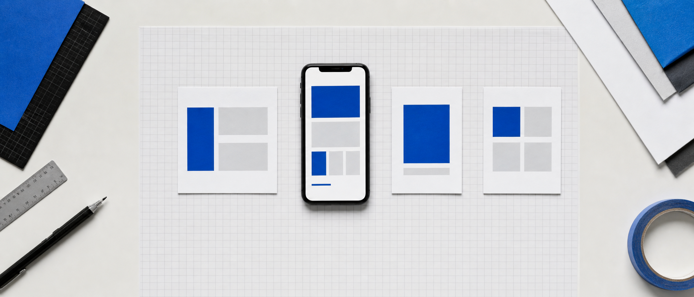

02 / 27 · SPEAKER
ABOUT LUOCHEN

Agent Harness 工程师
× 全栈构建者
我把 AI 工程、公开写作和真实交付连在一起；这节课只讲一件事：让你亲手做出第一个可验证的小程序。
代码｜开源 PR 与 AI 编程实战产品｜从需求到可运行交付输出｜文章、课程与公开视频
不是三小时正式上线；是做出一个能运行、能真机预览、能被验证的 MVP。
我把 AI 工程、公开写作和真实交付连在一起；这节课只讲一件事：让你亲手做出第一个可验证的小程序。
实操中包含 AI 生成等待窗口：第 75—85 分钟休息 10 分钟；主路径没跑通时，调优时间自动回归修错。
输入、处理、输出完整发生。
微信开发者工具无阻塞报错。
至少一次手机扫码验证。
源码、截图、测试记录、已知问题。
账号资质与费用另行处理。
受平台与监管流程影响。
提交后由平台判断，不可压缩成现场动作。
登录、支付、数据库都不进今天范围。
谁，在什么时候，为何要用。
默认不登录、不支付、不接数据库。
你必须知道什么结果叫正确。
你是产品负责人；AI 是执行很快、但不了解上下文的实习生。
接下来的 125 分钟，不讲新概念，只把一个小程序做出来。
新建文件夹，粘贴确认后的需求。
AI 写项目时，留出 10 分钟休息。
在微信开发者工具中编译、复制报错、重试。
扫码走完整主路径，再决定要不要调优。
喝水、活动、回来后再看结果；不是让人连续高强度坐满三小时。
不调颜色，不换图标。
先证明“输入 → 处理 → 输出”。
在开发者工具点击“+”。
选 AI 刚才写入的同一个项目文件夹。
有自己的 AppID 就配置；没有则按可预览边界处理。
不要直接相信 AI 的“已完成”。
页面名或路由。
按顺序写操作。
可观察到的结果。
正确状态是什么。
Console 错误和截图。
不要顺手重构。
与人工验算一致。
有提示，不崩溃。
边界值有反馈。
状态不互相污染。
初始状态正确。
没有遮挡和误触。
主路径没通过？这 25 分钟继续修错；不是硬塞“美化作业”。

不让紫色渐变随意出现。
需要图标时换图标库资产。
让核心输入和结果最显眼。
每次改完都重新点主路径。
当你再次看到正确结果，才允许进入交付整理。
可重新导入的完整项目目录。
真机截图或核心流程录屏。
六项测试的通过记录。
明确没做什么、风险在哪里。
名称、图标、隐私说明与类目。
按主体与平台要求提交。
由平台进入审核流程。
审核通过后再配置线上版本。
把第一版做小，把每一步做实。
先科普，再动手；有余量才调优。